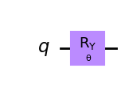
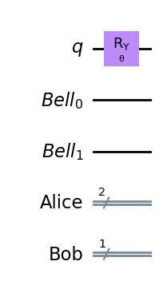
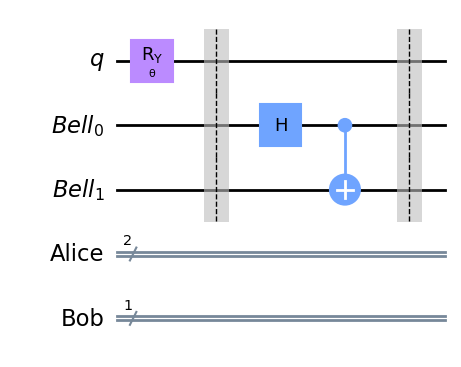
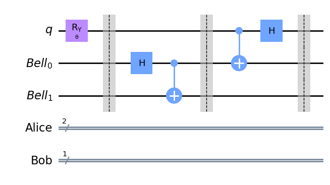
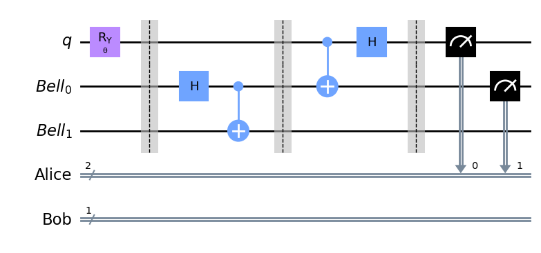
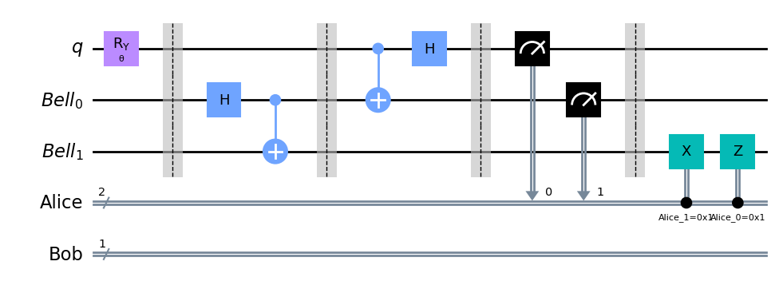
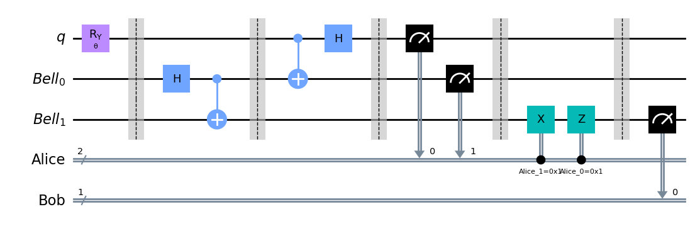
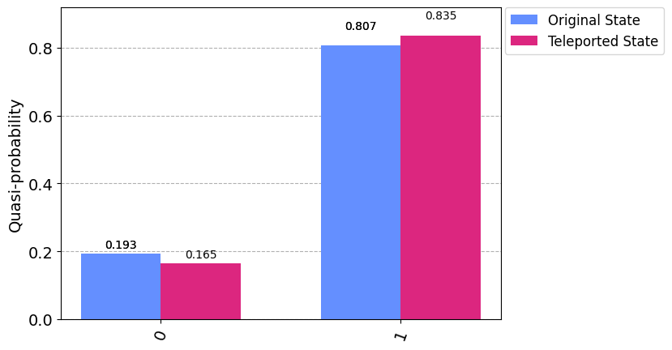

from qiskit.circuit import ClassicalRegister, QuantumRegister
from qiskit.circuit import Parameter
from qiskit.circuit import QuantumCircuitHow Quantum qubits can be teleported despite No Cloning Theorem?
Teleportation
Quantum information cannot be copied due to the No Cloning Theorem, however it can be “teleported” in the sense that a qubit can be entangled with a quantum resource, and via a protocol of measurements and classical communication of their results, the original quantum state can be reconstructed on a different qubit. This process destroys the information in the original qubit via measurement.
In this exercise, we will construct a particular qubit state and then transfer that state to another qubit using the teleportation protocol. Here we will be looking at specific classical and quantum registers, so we need to import those.
Create the circuit
Define an angle \(\theta\) to rotate our qubit by. This will allow us to easily make comparisons for the original state and the teleported state.
theta = Parameter('θ')
qr = QuantumRegister(1, 'q')
qc = QuantumCircuit(qr)
qc.ry(theta, 0)
qc.draw('mpl')
Alice possesses the quantum information \(|\psi\rangle\) in the state of \(q\) and wishes to transfer it to Bob. The resource they share is a special entangled state called a Bell state \[
|\Phi^+\rangle = \frac{1}{2} \left( |00\rangle + |11\rangle \right)
\] with the first of the pair going to Alice and the second to Bob. Hence Alice has a 2-qubit register (\(q\) and \(Bell_0\)) and Bob has a single-qubit register (\(Bell_1\)). We will construct the circuit by copying the original qc and adding the appropriate registers.
tele_qc = qc.copy()
bell = QuantumRegister(2, 'Bell')
alice = ClassicalRegister(2, 'Alice')
bob = ClassicalRegister(1, 'Bob')
tele_qc.add_register(bell, alice, bob)
tele_qc.draw('mpl')
Now create the Bell pair with \(Bell_0\) going to Alice and \(Bell_1\) going to Bob. This is done by using a Hadamard gate to put \(Bell_0\) in the \(|+\rangle\) state and then performing a CNOT with the same qubit as the control. After they receive their respective qubit, they part ways.
# create Bell state with other two qubits
tele_qc.barrier()
tele_qc.h(1)
tele_qc.cx(1, 2)
tele_qc.barrier()
tele_qc.draw('mpl')
Next, Alice performs a CNOT controlled by \(q\) on \(Bell_0\), which maps information about the state onto it. She then applies a Hadamard gate on \(q\).
# alice operates on her qubits
tele_qc.cx(0, 1)
tele_qc.h(0)
tele_qc.barrier()
tele_qc.draw('mpl')
Now Alice measures her qubits and saves the results to her register.
ty= ClassicalRegister(2, 'alpha')ty[0]Clbit(ClassicalRegister(2, 'alpha'), 0)ty[1]Clbit(ClassicalRegister(2, 'alpha'), 1)tele_qc.measure([qr[0], bell[0]], alice)
tele_qc.draw('mpl')
Bob’s qubit now has the information \(|\psi\rangle\) from Alice’s qubit \(q\) encoded in \(Bell_1\), but he does not know what basis to measure in to extract it. Accordingly, Alice must share the information in her register over a classical communication channel (this is why teleportation does not violate special relativity, no matter how far Alice and Bob are apart). She instructs Bob to perform an X gate on his qubit if her measurement of \(Bell_0\) yields a 1 outcome, followed by a Z gate if her measurement of \(q\) yields a 1.
The applications of these gates can be conditioned on the measurement outcomes in two ways: - the .c_if() instruction, which applies the gate it modifies if the value of the ClassicalRegister index is equal to the value specified. Note that this works only on simulators. - the .if_test() context which operates similarly, but generalizes the syntax to allow for nested conditionals. This works on both simulators and actual hardware.
bell[0]Qubit(QuantumRegister(2, 'Bell'), 0)qr[0]Qubit(QuantumRegister(1, 'q'), 0)def bob_transform(qc, bob_bit, alice):
qc.x(bob_bit).c_if(alice[1], 1)
qc.z(bob_bit).c_if(alice[0], 1)graded_qc = tele_qc.copy()
graded_qc.barrier()
bob_transform(graded_qc, bell[1], alice)graded_qc.draw('mpl')
Finally, Bob can measure his qubit, which would yield results with the same probabilities as had Alice measured it originally.
graded_qc.barrier()
graded_qc.measure(bell[1], bob)
graded_qc.draw('mpl')
The statevector simulator cannot work with dynamic circuits because measurement is not a unitary operation. Therefore we import the Sampler primitive from qiskit_aer to use the AerSimulator. We choose our angle to be \(5\pi/7\), which will yield a 1 result about 80% of the time and 0 result about 20% of the time. Then we run both circuits: the original one Alice had and the teleported one Bob receives.
from qiskit_aer.primitives import Sampler
import numpy as np
angle = 5*np.pi/7
sampler = Sampler()
qc.measure_all()
job_static = sampler.run(qc.bind_parameters({theta: angle}))
job_dynamic = sampler.run(graded_qc.bind_parameters({theta: angle}))
print(f"Original Dists: {job_static.result().quasi_dists[0].binary_probabilities()}")
print(f"Teleported Dists: {job_dynamic.result().quasi_dists[0].binary_probabilities()}")Original Dists: {'1': 0.806640625, '0': 0.193359375}
Teleported Dists: {'011': 0.03515625, '111': 0.2001953125, '001': 0.05078125, '110': 0.1826171875, '100': 0.208984375, '101': 0.2431640625, '000': 0.0341796875, '010': 0.044921875}Wait, we see different results! While measuring Alice’s original \(q\) yields the expected ratio of outcomes, the teleported distributions have many more values. This is because the teleported circuit includes Alice’s measurements of \(q\) and \(Bell_0\), whereas we only wish to see Bob’s measurements of \(Bell_1\) yield the same distribution.
In order to rectify this, we must take the marginal counts, meaning we combine results in which Bob measures a 0 and all the results in which Bob measures a 1 over all the possible combinations. This is done with the marginal_counts method from qiskit.result, which combines results over measurement indices.
Marginalisation
Ex 4 - Marginalize the teleported counts
Hint: Remember that bit strings are reported in the little-endian convention.
job_static.result().quasi_dists[0]{1: 0.806640625, 0: 0.193359375}job_static.result()SamplerResult(quasi_dists=[{1: 0.806640625, 0: 0.193359375}], metadata=[{'shots': 1024, 'simulator_metadata': {'parallel_state_update': 12, 'parallel_shots': 1, 'sample_measure_time': 0.000272645, 'noise': 'ideal', 'batched_shots_optimization': False, 'remapped_qubits': False, 'device': 'CPU', 'active_input_qubits': [0], 'measure_sampling': True, 'num_clbits': 1, 'input_qubit_map': [[0, 0]], 'num_qubits': 1, 'method': 'statevector', 'fusion': {'applied': False, 'max_fused_qubits': 5, 'threshold': 14, 'enabled': True}}}])result_dynamic = job_dynamic.result().quasi_dists[0].binary_probabilities()print(result_dynamic){'011': 0.03515625, '111': 0.2001953125, '001': 0.05078125, '110': 0.1826171875, '100': 0.208984375, '101': 0.2431640625, '000': 0.0341796875, '010': 0.044921875}## Index should be 2 because we want to measure Bob's bit, left most bit e.g. in 100, Bob's bit is 1
from qiskit.result import marginal_countstele_counts = marginal_counts(result_dynamic, indices=[2])# marginalize countstele_counts{'0': 0.1650390625, '1': 0.8349609375}from qiskit.visualization import plot_histogram
legend = ['Original State', 'Teleported State']
plot_histogram([job_static.result().quasi_dists[0].binary_probabilities(), tele_counts], legend=legend)
import qiskit.tools.jupyter
%qiskit_version_tableVersion Information
| Qiskit Software | Version |
qiskit-terra |
0.24.0 |
qiskit-aer |
0.12.0 |
qiskit-ibmq-provider |
0.20.2 |
qiskit |
0.43.0 |
| System information | |
| Python version | 3.8.3 |
| Python compiler | Clang 10.0.0 |
| Python build | default, Jul 2 2020 11:26:31 |
| OS | Darwin |
| CPUs | 6 |
| Memory (Gb) | 16.0 |
| Sat Jul 22 22:53:52 2023 IST | |